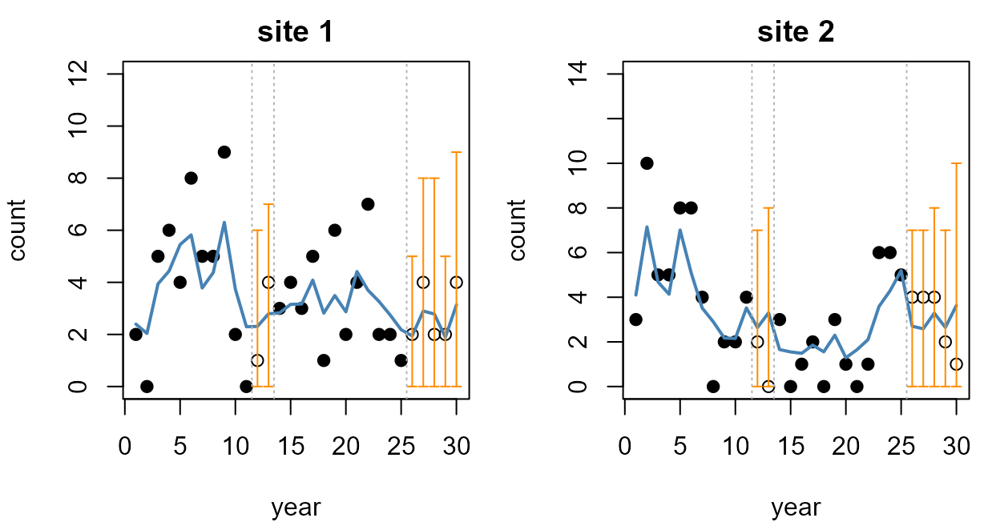
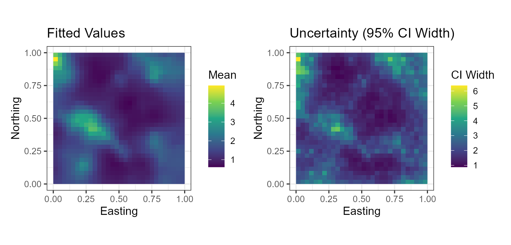

This article predicts three kinds of unobserved values: counts in groups the fit saw and in groups it did not, counts at future times, and a field at locations between the observations. Each prediction is made for values that were simulated and then held back from the fit, so every interval is checked by counting how many held-out values it contains. It ends with a map of a prediction and its uncertainty. Installation is covered in Get started. The map needs ggplot2 and patchwork, and its raster form also sf and stars.
-
Groups:
predict()andposterior_predict()atnewdatawith fitted and new group labels, andre_form = NAfor the population level. -
Forecast: rows with an
NAresponse, read back withposterior_linpred()andposterior_predict(). -
Locations:
predict()at new coordinates for a continuous spatial field. -
Map:
plot_map_panel()on a prediction grid.
Example
covers() counts how often an interval contains the true
value. It takes a data frame with lower and
upper columns, as predict(se.fit = TRUE)
returns, and the truth. pi90() turns a matrix of replicate
counts, one column per row of newdata, into the 90%
predictive interval of each column.
covers <- function(p, truth) mean(p$lower <= truth & truth <= p$upper)
pi90 <- function(yrep) {
data.frame(lower = apply(yrep, 2, quantile, 0.05),
upper = apply(yrep, 2, quantile, 0.95))
}Predicting for fitted and new groups
Simulate Poisson counts in 40 groups of 10 observations, with
intercept 0.3, slope 0.5 and group intercepts of standard deviation 0.6.
eta keeps the true log mean of every row. Two kinds of rows
are held back: the last two rows of each of groups 1 to 30, whose groups
stay in the fit, and all rows of groups 31 to 40, which the fit never
sees.
set.seed(1)
G <- 40
grp <- rep(seq_len(G), each = 10)
x <- rnorm(length(grp))
u <- rnorm(G, 0, 0.6)
eta <- 0.3 + 0.5 * x + u[grp]
d <- data.frame(y = rpois(length(eta), exp(eta)), x = x,
g = factor(grp), eta = eta)
pos <- ave(grp, grp, FUN = seq_along)
held_known <- grp <= 30 & pos > 8
held_new <- grp > 30
train <- droplevels(d[!held_known & !held_new, ])Fit the random-intercept model to the training rows.
fit_re <- tulpa(y ~ x + (1 | g), data = train, family = "poisson")
VarCorr(fit_re)
#> term coef sd source
#> 1 g (Intercept) 0.5681437 sampledThe group standard deviation is estimated at 0.57 against the
simulated 0.6. predict() reads the group column of
newdata. A label the fit saw takes that group’s posterior
effect. A label it did not see takes a new effect drawn from the group
distribution, so its interval carries the spread between groups. The new
groups are relabelled so that no label matches a fitted group.
nd_known <- d[held_known, ]
nd_new <- transform(d[held_new, ], g = paste0("new_", g))
p_known <- predict(fit_re, newdata = nd_known, se.fit = TRUE)
p_new <- predict(fit_re, newdata = nd_new, se.fit = TRUE)
p_pop <- predict(fit_re, newdata = nd_known, se.fit = TRUE, re_form = NA)p_known, p_new and p_pop hold
the link-scale prediction with its 95% interval for each held-out row.
The table counts how often each interval contains the true log mean and
gives the mean interval width.
data.frame(
rows = c("fitted groups", "new groups", "fitted groups, re_form = NA"),
n = c(nrow(nd_known), nrow(nd_new), nrow(nd_known)),
coverage = round(c(covers(p_known, nd_known$eta), covers(p_new, nd_new$eta),
covers(p_pop, nd_known$eta)), 2),
width = round(c(mean(p_known$upper - p_known$lower),
mean(p_new$upper - p_new$lower),
mean(p_pop$upper - p_pop$lower)), 2))
#> rows n coverage width
#> 1 fitted groups 60 0.97 1.03
#> 2 new groups 100 0.90 2.29
#> 3 fitted groups, re_form = NA 60 0.28 0.51The intervals for fitted groups contain 58 of the 60 true values, and
those for new groups 90 of 100. The new-group interval is more than
twice as wide, because the group’s own effect is unknown. With
re_form = NA every group effect is set to zero: the
interval describes the population mean, which is narrower and contains
the log mean of a particular group only 28% of the time.
posterior_predict() draws counts at newdata
with the same group handling, so its quantiles give predictive intervals
for the held-out counts themselves.
yrep_known <- posterior_predict(fit_re, newdata = nd_known, ndraws = 2000,
seed = 2)
yrep_new <- posterior_predict(fit_re, newdata = nd_new, ndraws = 2000,
seed = 2)
round(c(fitted_groups = covers(pi90(yrep_known), nd_known$y),
new_groups = covers(pi90(yrep_new), nd_new$y)), 2)
#> fitted_groups new_groups
#> 0.95 0.97The 90% predictive intervals contain 95% of the held-out counts in fitted groups and 97% in new groups. Each new group shares one drawn effect across its rows within a replicate. Random slopes shows the same three predictions for a model with a random slope, plotted as bands over the covariate.
Forecasting with a masked response
A row whose response is NA is left out of the likelihood
and keeps its place in the model: its time is a node of the temporal
field, and its covariates enter its linear predictor. Fitting with such
rows forecasts them, and an NA inside the observed period
fills a gap.
Simulate six sites over 30 years. Each site has its own AR(1) path with autocorrelation 0.8 and marginal standard deviation 0.4, and the counts have intercept 1 and covariate slope 0.3. Years 26 to 30 are held back as the forecast, and years 12 and 13 as a gap.
set.seed(4)
S <- 6; Tn <- 30
ar_path <- function() {
as.numeric(arima.sim(list(ar = 0.8), Tn, sd = 0.4 * sqrt(1 - 0.8^2)))
}
d2 <- data.frame(site = factor(rep(1:S, each = Tn)), year = rep(1:Tn, S),
x = rnorm(S * Tn))
d2$eta <- 1 + 0.3 * d2$x + unlist(replicate(S, ar_path(), simplify = FALSE))
d2$y <- rpois(nrow(d2), exp(d2$eta))
held <- d2$year > 25 | d2$year %in% 12:13
d2_na <- d2
d2_na$y[held] <- NAd2_na has the same 180 rows as d2, with 42
counts set to NA. temporal_ar1() with
group_var gives each site its own path with a shared
autocorrelation and precision.
fit_ts <- tulpa(y ~ x, data = d2_na, family = "poisson",
temporal = temporal_ar1("year", group_var = "site"),
mode = "auto", control = list(progress = FALSE))
summary(fit_ts)$hyperparameters[, c("parameter", "median", "ci_lo", "ci_hi")]
#> parameter median ci_lo ci_hi
#> 1 tau 8.7624673 4.1072177 23.5457521
#> 2 rho 0.7270145 0.4602468 0.9007093The autocorrelation rho has median 0.73, with an
interval from 0.46 to 0.90 around the simulated 0.8.
posterior_linpred(summary = TRUE) returns the posterior of
the log mean for every row, the masked ones included, and
posterior_predict() draws counts for every row.
lp_ts <- posterior_linpred(fit_ts, summary = TRUE)
yrep_ts <- posterior_predict(fit_ts, ndraws = 2000, seed = 3)
lp_held <- data.frame(lower = lp_ts$conf.low, upper = lp_ts$conf.high)[held, ]
round(c(log_mean_95 = covers(lp_held, d2$eta[held]),
counts_90 = covers(pi90(yrep_ts[, held]), d2$y[held])), 2)
#> log_mean_95 counts_90
#> 1 1The 95% intervals of the log mean contain 42 of the 42 true values, and the 90% predictive intervals 42 of the held-out counts. The figure shows two sites: the observed counts, the posterior mean count, and the 90% predictive interval at each held-out year.
iv <- pi90(yrep_ts)
op <- par(mfrow = c(1, 2), mar = c(4, 4, 2, 1))
for (s in c(1, 2)) {
r <- d2$site == s
plot(d2$year[r], d2$y[r], pch = ifelse(held[r], 1, 19),
ylim = c(0, max(d2$y[r], iv$upper[r])), xlab = "year",
ylab = "count", main = paste("site", s))
lines(d2$year[r], exp(lp_ts$estimate[r]), lwd = 2, col = "steelblue")
h <- r & held
arrows(d2$year[h], iv$lower[h], d2$year[h], iv$upper[h], angle = 90,
code = 3, length = 0.03, col = "darkorange")
abline(v = c(11.5, 13.5, 25.5), col = "grey70", lty = 3)
}
par(op)Open circles are the held-out counts. Past year 25 no count informs
the site’s path, so the forecast follows the AR(1) process, which draws
the path back toward the population level at the rate set by
rho. mode = "auto" ran this fit on the
nested_laplace backend. Temporal
models forecasts a single random walk, whose interval keeps
widening, and Space-time models forecasts
held-out years of an areal space-time interaction, read back with
spatiotemporal_effects().
Predicting at new locations
A continuous spatial field is defined between the observations, so
predict() can add it at coordinates the fit never saw.
Simulate 310 points in the unit square and a Matern field with range 0.3
and standard deviation 0.8 at the points and at the nodes of a 30 by 30
grid. The counts have intercept 0.5 and slope 0.4 on a standard normal
covariate elev. The first 250 points are the observations
and the other 60 are held back.
matern1 <- function(h, range, sigma) {
kh <- sqrt(8) / range * h
ifelse(h == 0, sigma^2, sigma^2 * kh * besselK(kh, 1))
}
set.seed(11)
pts <- data.frame(lon = runif(310), lat = runif(310))
g1 <- seq(1 / 60, 59 / 60, length.out = 30)
grid <- expand.grid(lon = g1, lat = g1)
K <- matern1(as.matrix(dist(rbind(pts, grid))), range = 0.3, sigma = 0.8)
w <- as.numeric(t(chol(K + diag(1e-8, nrow(K)))) %*% rnorm(nrow(K)))
pts$elev <- rnorm(310)
pts$eta <- 0.5 + 0.4 * pts$elev + w[1:310]
pts$y <- rpois(310, exp(pts$eta))
obs <- pts[1:250, ]
out <- pts[251:310, ]w holds the field at the 310 points followed by the 900
grid nodes. Fit an SPDE field on a mesh built from the observed
coordinates (Continuous fields with the SPDE
explains the mesh arguments).
mesh <- spatial_spde(~ lon + lat, data = obs, max_edge = c(0.1, 0.4),
cutoff = 0.03)
ctl <- list(n_threads = 2, progress = FALSE)
fit_sp <- tulpa(y ~ elev, data = obs, family = "poisson", spatial = mesh,
control = ctl)
spatial_range(fit_sp)
#> mean sd q2.5 q97.5
#> range 0.2828414 Inf 0.1397424 0.5611945
#> sigma 0.6189089 0.1184173 0.4352965 0.8876350out carries the coordinate columns the mesh was built
from and elev. predict() projects the field to
those coordinates and adds the fixed effects; with
include_field = FALSE it leaves the field out.
p_sp <- predict(fit_sp, newdata = out, se.fit = TRUE)
p_fix <- predict(fit_sp, newdata = out, se.fit = TRUE, include_field = FALSE)
data.frame(
prediction = c("with field", "fixed effects only"),
rmse = round(c(sqrt(mean((p_sp$fit - out$eta)^2)),
sqrt(mean((p_fix$fit - out$eta)^2))), 2),
coverage = round(c(covers(p_sp, out$eta), covers(p_fix, out$eta)), 2))
#> prediction rmse coverage
#> 1 with field 0.39 0.92
#> 2 fixed effects only 0.61 0.47Adding the field lowers the error of the predicted log mean at the
held-out points from 0.61 to 0.39. Its 95% intervals contain 55 of the
60 true values. The interval is read from the fit’s posterior of the
coefficients and the field, a mixture over the cells of the
hyperparameter grid (?predict.tulpa_fit). Without the field
the interval covers only the fixed effects and contains 28 of the 60
values.
spatial_gp() fits the same field as a nearest-neighbour
Gaussian process (NNGP) by default, and as a Hilbert-space approximation
(HSGP) with approx = "hsgp". predict() adds
either field at new coordinates in the same way, and the held-out values
score all three.
fit_nngp <- tulpa(y ~ elev, data = obs, family = "poisson",
spatial = spatial_gp(~ lon + lat), control = ctl)
fit_hsgp <- tulpa(y ~ elev, data = obs, family = "poisson",
spatial = spatial_gp(~ lon + lat, approx = "hsgp"),
control = ctl)
p_gp <- list(spde = p_sp,
nngp = predict(fit_nngp, newdata = out, se.fit = TRUE),
hsgp = predict(fit_hsgp, newdata = out, se.fit = TRUE))
tab_gp <- t(sapply(p_gp, function(p) c(
rmse = sqrt(mean((p$fit - out$eta)^2)), coverage = covers(p, out$eta),
width = mean(p$upper - p$lower))))
round(tab_gp, 2)
#> rmse coverage width
#> spde 0.39 0.92 1.37
#> nngp 0.40 0.95 1.73
#> hsgp 0.40 0.95 1.57The three point predictions have errors between 0.39 and 0.4. The SPDE, NNGP and HSGP intervals contain 55, 57, 57 of the 60 held-out values.
Mapping the prediction
plot_map_panel() calls
predict(type = "response", se.fit = TRUE) at
newdata and draws two maps side by side: the expected count
and the width of its 95% interval. A regular grid is drawn as a raster
when sf and stars are installed, and as points otherwise; the two panels
are combined with patchwork. Here the grid sits at
elev = 0.
plot_map_panel(fit_sp, newdata = data.frame(grid, elev = 0))
The uncertainty map is on the count scale, so its width grows with
the expected count as well as with the distance to the nearest
observation. plot_map(what = "uncertainty") draws the
second panel alone, and summary = "q2.5" or
"q97.5" maps a bound instead of the point prediction.
Where next
- Random slopes: prediction for fitted and new groups when the groups differ in slope as well as intercept.
- Temporal models and Space-time models: forecasts from random walks and from areal space-time interactions.
- Continuous fields with the SPDE: the field mapped on a grid with its posterior standard deviation, and how the mesh changes it.
- Varying coefficients: a coefficient predicted at new coordinates and times.